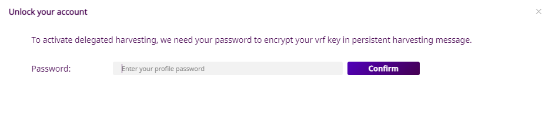
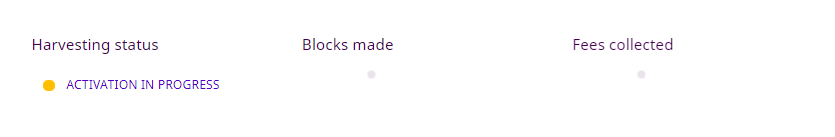

Share your account’s importance securely with a node and get rewarded.
Delegated harvesting enables accounts to receive rewards from creating new blocks without running a node. At the same time, it allows nodes to benefit from such an account’s (possibly higher) importance score.
This guide is therefore addressed at users not running a Symbol node. Node owners have access to the node’s configuration so it’s more convenient for them to use Remote harvesting instead of delegating.
As explained in the manual version of this guide there are a number of steps required to enable delegated harvesting, involving different accounts and several transactions. It is thus much more convenient to use Symbol’s Desktop Wallet as shown in this guide.
The process requires little more than selecting the desired node and sending a harvesting request.
Before you can activate delegated harvesting using the Desktop Wallet, you need the following items:
An up-to-date Desktop Wallet. Download the latest version from the releases page.
An account that will receive the harvesting fees. It must have:
At least 10,000 symbol.xym to be eligible and then some more to pay for transaction fees.
An importance score greater than zero. Keep in mind that this score is calculated every 12h.
Note
Activating Delegated harvesting requires sending transactions and paying the required transaction fees.
You can enable, disable and switch nodes multiple times, but be warned that each action will incur in a (small) transaction fee.
Select the Harvesting option in the menu on the left. You should see the Harvesting screen:

Note that the Harvesting status is 🔴 INACTIVE.
Click on the “Node Url” box to see a list of nodes currently connected to the network:

Note
Only nodes which act both as Peer and API nodes are shown on this list, but you can still request harvesting from pure Peer nodes by manually writing their URL in the box. In this case, though, you will also need to provide the node’s transport public key.
This key must be provided by the node owner. If you have instantiated the node using Symbol Bootstrap, you can find this key in the addresses.yml file.
Keep in mind, though, that when delegating harvesting to a non-API node the Harvesting Status indicator will not work.
Select a node from the list and click on the “Link all keys” button.
You will be asked to sign an Aggregate Transaction:

This aggregate transaction registers 3 different keys to your account which are needed for harvesting.
Enter your password and click “Confirm”.
The Desktop Wallet will then sign the transaction and announce it to the network. After a little while (shouldn’t take longer than 30 seconds), the screen should update:

You can see that the Harvesting status has changed to 🟡 KEYS LINKED and the different keys appear in the form.
All that is left now is to send a Persistent Delegation Request Transaction which is the actual request to the node.
Click on the “Activate” button.
Your password is needed again to encrypt the persistent delegation message sent to the node:
Enter your password and click “Confirm”.
Your password is needed one last time to sign and announce the persistent delegation request (which is a special type of transfer transaction):

Enter your password and click “Confirm” (again).
Once you receive the confirmation message (shouldn’t take longer than 30 seconds), the Harvesting status should change to 🟡 ACTIVATION IN PROGRESS:
At this point it is up to the node to accept the request and add your account as a harvester. When this happens, the Harvesting status will change to 🟢 ACTIVE:

Delegated harvesting is now enabled and you should start collecting fees, at a rate proportional to your node’s importance score (See the Final words section below for some remarks).
Note
When requesting delegation through a Persistent Delegation Request Transaction instead of directly configuring the node, whether the node enables delegated harvesting depends entirely on the node and not on the network. It is entirely up to the node to comply with the request or even to lie about its state and provide a misleading Harvesting status indicator.
Therefore, there is no reliable way to know if your account has become a harvester or not besides waiting to see if your account starts receiving harvesting fees.
You can find more details about this process in the manual version of this guide.
The Harvesting status indicator can help you find out the state of your account’s delegated harvesting:
Status |
Meaning |
|---|---|
🔴 INACTIVE |
Some keys are missing. Go to step 2. |
🟡 KEYS LINKED |
Keys are present but the harvesting delegation request has not been sent. Go to step 5. |
🟡 IN PROGRESS |
The harvesting delegation request has been sent but the node has not acknowledged it yet. It might take a few minutes, or it might never happen. There is not much you can do at this point, except trying a different node. |
🟢 ACTIVE |
Harvesting is enabled. Harvested blocks and their fees should start arriving, depending on your account’s importance. |
🔴 FAILED |
Activation did not succeed or could not be verified. Wait a bit or select a different node in step 2. See the note below for more details. |
Accounts with higher importance are selected more often to perform harvesting. Even if you successfully register as a delegated harvester with a node, you will not harvest any block (nor receive any fees) unless your importance score is high enough.
Importance score calculation does not happen continuously. By default, account importance scores are recalculated every 1440 blocks (about every 12 hours). See the importanceGrouping property in the Configuring network properties guide.
Finally, as explained in the note above, announcing a Harvesting Delegation request does not guarantee being added as a delegated harvester. Nodes are free to comply with the request or even to lie about its status.
 Last updated by
Last updated by {kind=link}
{kind=link}